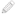
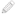

ウィザードのこのページでは、リコンフィギャラブル モジュール (RM) をパーティション定義 (partitionDefs) に割り当てる PR コンフィギュレーションを定義して、コア デザインのスタティック ロジックとまとめて、独自のデザイン コンフィギュレーションを作成できます。この後、PR コンフィギュレーションをインプリメントしてビットストリームを生成できるようになります。
このページには、プロジェクトを管理するための [Configurations] の表が表示されます。表の背景中央には、[automatically create configurations] というコマンド リンクがあります。このリンクをクリックすると、partitionDefs と RM をマップするのに必要なコンフィギュレーションがすべて自動的に設定されます (推奨)。
表には、PR コンフィギュレーションが名前順にリストされ、プロジェクトの partitionDefs が表示されます。コンフィギュレーションごとに RM を指定して、partitionDef をそれぞれ割り当てることができます。[Configurations] 表のツールバー メニューには、次のコマンドが含まれます。
- [Add] (
 ) : 現在のプロジェクトに新しい PR コンフィギュレーションが追加できます。クリックすると、コンフィギュレーションの名前を指定する小さなダイアログ ボックスが開きます。デフォルトの名前は config_<#> で、番号が順番に付いていきます。ヒント: 名前の横の鉛筆アイコン () をクリックすると、表内の既存コンフィギュレーションの名前が編集できます。
) : 現在のプロジェクトに新しい PR コンフィギュレーションが追加できます。クリックすると、コンフィギュレーションの名前を指定する小さなダイアログ ボックスが開きます。デフォルトの名前は config_<#> で、番号が順番に付いていきます。ヒント: 名前の横の鉛筆アイコン () をクリックすると、表内の既存コンフィギュレーションの名前が編集できます。 - [Remove] (
 ) : 現在のプロジェクトから選択したコンフィギュレーションが削除されます。
) : 現在のプロジェクトから選択したコンフィギュレーションが削除されます。
[Next] をクリックして Partial Reconfiguration ウィザードの [Edit Configuration Runs] ページに進みます。
注: Partial
Reconfiguration
ウィザードのコマンドは、各ページの後には実行されませんが、すべてのページを確認して設定全体が終了するまで保存されます。[Skip
to Finish] をクリックして [Partial Reconfiguration Summary]
ページに進むと、すべてのページを確認しなくても設定を終了できます。
関連項目
| 『Vivado® Design Suite ユーザー ガイド : パーシャル リコンフィギュレーション』 (UG909) の「Vivado プロジェクト フロー」 | |
| 『Vivado® Design Suite Tcl コマンド リファレンス ガイド』 (UG835) の「create_pr_configuration」 | |
 |
Vivado Design Suite QuickTake ビデオ : Vivado でパーシャル リコンフィギュレーションを実行 |
|
Vivado Design Suite QuickTake ビデオ : UltraScale 用のパーシャル リコンフィギュレーション |